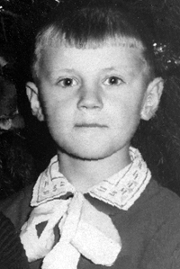
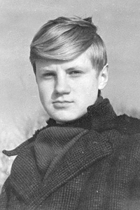
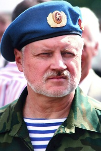
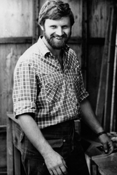
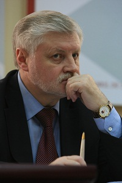

О себе
Родился 14 февраля 1953 года в г. Пушкин (Пушкинский район, г. Санкт-Петербург).
Родители познакомились в военные годы в Новгородской области. Отец – Михаил Емельянович Миронов. Мать – Галина Фёдоровна Варламова. Деда по материнской линии звали Фёдор Никитич Варламов, а бабушку – Дарья Ильинична. Родители отца были смоленскими крестьянами. Деда звали Емельян Еремеевич Миронов, а бабушку – Марина Дорофеевна Миронова.
Детство провел в старинном доме на улице Красной Артиллерии в Пушкине. Отец после войны остался служить в армии. Мать работала инструктором партучёта.
Был вторым ребёнком в семье.
Окончил среднюю школу №410 в Пушкине. С первого класса мечтал стать геологом.
В 9-ом классе поступил в Индустриальный техникум на направление "Геофизические методы поиска и разведки полезных ископаемых". На первом году обучения бросил техникум и поехал путешествовать в Сибирь. Летом следующего года снова поступил в техникум. По окончанию первого курса отправился в первую экспедицию на Кольский полуостров.
На втором курсе по собственному желанию пошел в армию. Проходил службу в воздушно-десантных войсках. В последний год службы был избран на первую в жизни выборную должность – заседателем военного трибунала Кировабадского гарнизона.
Из армии пришёл с чётким пониманием, что нужно уже учиться не в техникуме, а в институте. Для подготовки параллельно с учебой в вечерней школе работал мастером производственного обучения в Высшем пушкинском командном училище радиоэлектроники ПВО страны.
После школы выдержал конкурсные испытания на первый курс геофизического отделения Горного института (ныне Санкт-Петербургский государственный горный университет).
На втором курсе перевелся на вечернее отделение для того, чтобы работать. Будучи студентом, начал работать в НПО "Рудгеофизика", в секторе, где занимались поисками уранового сырья. 1978—1986 — старший инженер-геофизик НПО "Рудгеофизика" (ныне ФГУ НПП "Геологоразведка"), затем — геофизиком Зеленогорской экспедиции Министерства геологии СССР. В 1980 году окончил институт.
С 1986 по 1991 год по направлению Министерства геологии СССР работал старшим геофизиком аэропартии в Монгольской Народной Республике. До этого с 1981 года ездил туда ежегодно на полгода.
За две недели до начала августовского путча вернулся в Санкт-Петербург. Поступил на отделение второго высшего образования на факультет внешнеэкономической деятельности, который окончил по ускоренной программе за 11 месяцев.
Всего имею пять высших образований: геологическое (1980, Ленинградский горный институт имени Г.В.Плеханова), экономическое (1998, юридический факультет СПбГУ), управленческое (1997, Российская академия государственной службы при Президенте Российской Федерации), юридическое (1998, юридический факультет СПбГУ), философское (2004, философский факультет СПбГУ).
Женат, трое детей – два сына - Ярослав и Иван, дочь Ирина, двое внуков.
Друзья остались с детства, со школы, из Горного института, из геологии.
Политическую карьеру начал в 1994 году. В 2004 году написал книгу "10 лет в политике".
Сергей Михайлович всегда с любовью и большим почтением рассказывает о своей семье и детстве. Своеобразные "репортажи" из личного архива c авторскими комментариями можно прочитать на страницах Живого Журнала Сергея Миронова.
Семья и детство
Детство и школьные годы провел в Санкт-Петербурге, на окраине бывшего Царскосельского Села – на улице Красной Артиллерии, дом 30. "Для нашей "артиллерийской окраины" понятие "поехать в город" означало не в Ленинград, что было бы естественно, потому что Пушкин – это пригород Ленинграда, а это просто в центр Пушкина. Вот такая у нас была окраина, – вспоминает Сергей Миронов. – С одной стороны, мы были настоящие городские дети – рядом с нами был Ленинград, в то же время мы не лишены были многих радостей тех, кто своё детство провёл на природе".
Отец Сергея Миронова был сверхсрочник, старшина, служил в Пушкинском военном училище радиоэлектроники. "Познакомились они с мамой во время войны, – рассказывает Сергей Миронов. – Отец воевал на Ленинградском фронте, мама во время войны работала в паспортном столе. Потом, после войны, тридцать лет была инструктором партучета в том же вузе, что и отец".
"У родителей не было высшего образования, но мама очень любила читать. Особый след в моей жизни оставила сестра. Марина, на пять лет меня старше, тянула меня "за уши" к светлому".
Сергей Миронов жил в обычной коммуналке 60-х годов. "Быт скудный, как у всех в те времена, но воспоминания детства у меня самые светлые", – добавляет Сергей Миронов. "Мы ставили какие-то спектакли, играли в многочисленные игры. Я думаю, что даже само название этих игр сейчас ничего не скажет новому поколению детей. Например, мы играли в "Ромбы", в "Двенадцать палочек", мы играли в "Казаки-разбойники" (наверное, это более-менее понятно). Конечно, мы играли постоянно в войну, в пионербол, в "Картошку", в городки, в "Чижика". В дождливые дни играли на лестнице в подъезде в фантики, и у каждого была своя коллекция фантиков".
"Летом у нас во дворе родители по очереди дежурили с детьми: водили их в культпоходы, водили на речку Поповку, благодаря чему я впервые увидел окаменелости и на всю жизнь "заболел" геологией". Вскоре вся комната, где Сергей Миронов в детстве жил с родителями, была завалена булыжниками. "Мама ругалась, пыталась все выбросить, но я протестовал".
"У нас во дворе было много мальчишек, – вспоминает Сергей Миронов, – были, в том числе, и наши сверстники, и даже мои одноклассники, но почему-то у нас завязалась такая команда из пятерых мальчишек. И очень скоро мы назвали себя "тимуровцами". Летом, во время каникул мы даже пытались носить некое подобие формы, её заменяли пилотки. У нас была отрядная песня. Когда мы решили, что должны организовать тимуровскую команду, конечно, мы озадачились строительством штаба. И нужно сказать, что штаб мы сделали. Я на всю жизнь запомнил, как нужно пилить, строгать, как гвозди забивать, как крышу толью, например, покрывать, как стёкла вставлять, как печку делать и многое-многое другое. Эти навыки потом пригодились мне на всю жизнь".
В детстве Сергей Миронов с сестрой Мариной часто проводили лето у бабушки и дедушки в Новгородской области. "Моя бабушка, Дарья Ильинична Варламова, была удивительным человеком, – вспоминает он. – Ее добрые, ласковые руки я помню до сих пор. А еще помню, как она меня приучила пить молоко. Она насыпала в стакан малину и заливала молоком. Давала мне ложечку и говорила: "Серёнька, давай малинку". Я выбирал ложкой ягоды. И с каждым разом малинки было меньше, а молока – больше. У меня самого теперь двое внучат, но бабушкины приемы воспитания не забылись. По сей день считаю, что любовь и ласка – лучший способ вырастить хорошего человека".
Школьные годы
1 сентября 1960 года Сергей Миронов пошел первый класс 410-ой средней школы г. Пушкина для детей военнослужащих. Учился Сергей Миронов неровно. "На математике мог получить и "четвёрку", и "пятёрку", но мог получить и "пару". При истории и литературе я получал "пятёрки", – вспоминает он.
"По-моему, в классе седьмом, когда мы по-настоящему стали изучать русскую литературу, даже когда школьная программа не подразумевала, что школьники будут изучать те произведения, где на самом деле говорилось о любви, я своим мальчишеским сердцем чувствовал, иногда между срок, что вся русская литература, конечно же, о любви. И мне были знакомы переживания Татьяны, и Онегина, и Ленского, и Ольги в "Евгении Онегине". То, что происходило в отношениях между Дубровским и Машей, и даже бедная Катерина (та самая, которая "луч света в тёмном царстве") с её великой любовью к жизни находили самый горячий отклик в моей душе".
На уроках литературы и в школе самодеятельности Сергей Миронов любил декламировать сclass="justify"тихи. "Моя учительница Алла Константиновна Неклюдова говорила, что у меня неплохо получается", – рассказывает он. Сергей Миронов вспоминает участие в школьном спектакле в третьем классе: "Кто-то решил, что на Новый год в школе нужно поставить фрагмент балета "Красная Шапочка". Выбор Красной Шапочки выпал на Марину, мою одноклассницу. Почему из меня захотели сделать Серого Волка, я не знаю, но спектакль решили ставить по-серьёзному. Репетировали мы, естественно, без костюмов, потому что с этим была проблема. Для меня мама с моей сестрёнкой Мариной сшили из серого материала комбинезон, к нему пришили где-то найденный лисий хвост. Понятно, хвост был рыжий, и мы с сестрёнкой акварельными серыми красками перекрасили его. Но мы нигде не могли найти маски волка, а вот лисьих масок, как назло, было сколько угодно. Коль скоро хвост перекрасили, мы с сестрой сели за покраску этой маски, поэтому волк получился хитренький, с вытянутой лисьей мордой".
"Как сейчас помню, триумф был бешеный. Правда, мне было ужасно жарко в этом комбинезоне, который я надевал поверх школьной формы, но прыгал и рычал я от души. Причём, никто, кроме моих одноклассников, не знал, что Серый Волк – это я, поэтому, в конце представления, когда мы раскланивались, я гордо сорвал маску волка-лисицы с лица, чтобы все видели, что это я – Серёжка Миронов – чуть было не съел несчастную Красную Шапочку". "В Интернете я переписываюсь со своей бывшей одноклассницей, и свои письма она подписывает: "Красная Шапочка", а я, отвечая ей, подписываюсь: "Серый Волк", – делится Сергей Миронов.
К девятому классу Сергей Миронов стал, по собственному выражению, "явно неуспевающим" учеником. "Сидел я на последней парте, в ряду, который находился у стены", – добавляет он.
Любовь к химии, пригодившейся впоследствии в профессии геолога, Сергею Миронову досталась от старшей сестры Марины: "Маринка научила меня, как в качестве подсказки пользоваться периодической таблицей Менделеева и я это неплохо делал, решая различные уравнения химических реакций". "Моими любимыми школьными предметами были химия и история, а самым нелюбим предметом у меня английский, – говорит Сергей Миронов. – Причём когда в пятом классе начался английский, мне как-то понравилось: всё интересно, буковки не наши. А потом, я не помню почему, с шестого класса – просто мучение. И я уже, наверное, был классе в восьмом – ни в зуб ногой. Удалось списать – тройку получал".
Сергей Миронов вспоминает забавный случай, приключившийся с ним в школе на "нелюбимом уроке": "Однажды нам задают написать сочинение о своей семье. Я вздыхаю тяжело и говорю маме: "Ну вот, наверное, на второй год" –"Как, сыночка, что такое?" – "Ну что, наверное, будет "пара" по английскому". – "Как?! Что?!" – "В школе по английскому дали сочинение написать. А я сам не могу". Мама говорит: "А Маринка? Она же талантливая". – "Она не будет, – говорю. – Сам, как могу..." А мама: "Помоги брату!" Маринка: "Ах, так! Ладно, пиши".
"Кстати, когда Маринка написала сочинение, я спросил, что она там написала. Маринка сказала, что написала про нашу семью, написала, что я очень люблю учиться в школе, и что очень люблю английский язык, и в будущем хочу стать геологом, и, может быть, язык пригодится мне в экспедициях в другие страны". Сергей Миронов переписал сочинение сестры "не вдумываясь и уж, тем более, не пытаясь понять смысл написанного".
"На следующий день раздают. Учительница заходит, светится, а меня всего распирает. "Вот, дети, я пока Серёже Миронову отметку не поставила, вы знаете, я попрошу, чтобы Серёжа прочитал своё сочинение. Оно очень интересное", – вспоминает Сергей Миронов. – Опа-на! Вот это засада! Читать, мягко говоря, я не хотел, но самое печальное – практически не умел. Но читаю с горем пополам, меня все поправляют".
"Когда я читал сочинение перед классом, то английское слово "geology" я понял: это что-то про геологов. И значение других слов: "my mother", "my sister", которых было очень много, я знал. Вот я "пекаю", "мекаю", класс слушает, вроде всё нормально. Я дохожу до финала, с горем пополам дочитываю последние две строчки, – и вдруг весь класс взрывается хохотом и просто начинает падать под стол. Я в непонимании смотрю на "англичанку", смотрю на класс".
"Учительница спросила: – "Ты хоть понял, что сейчас прочитал?" – "А как же!". Но оказалось, Маринка сыграла со мной злую шутку, потому что сочинение заканчивалось в переводе на русский такими словами: "У меня есть много любимых предметов, особенно я люблю химию, люблю историю, но английский я не люблю, потому что ничего в нём не понимаю и понимать не собираюсь, и это сочинение писал не я, а моя сестра". Конечно, поставили мне "пару". Кончилось тем, что мама попросила меня сходить к "англичанке" и договориться с ней о возможности переписать сочинение, попроситься на дополнительные занятия. Маринка занималась со мной неделю. Это было ужасно. Но, в конце концов, за четверть свою "тройку" я получил".
"Спустя много лет, когда я оканчивал трёхгодичный курс английского языка, и сдавал устный экзамен в Москве на Неглинной улице, при подготовке к экзамену ощутил то хорошо понятное чувство людей, знающих язык, когда уже стал думать на английском языке, я вспоминал эту забавную историю, – вспоминает Сергей Миронов. – Всё-таки язык нужно учить вовремя, а не "валять дурака", как это в своё время делал ваш покорный слуга".
В девятом классе Сергей Миронов узнал, что в Ленинграде есть Индустриальный техникум, где готовят геофизиков, и принял решение, что в конце года с аттестатом за восьмой класс будет поступать туда, вместе с другом детства. "Толян, хотя мы одногодки, поступил мудрее и по-взрослому – он тут же ушёл из школы и полгода, до поступления в техникум, работал, принося родителям довольно неплохие деньги, – вспоминает Сергей Миронов. – А я очень любил школу, свой класс и решил, что лучше полгодика похожу в школу, но учиться, честно говоря, не собирался, потому что аттестат за восьмой класс, кстати, неплохой, у меня был, а переводиться в десятый я не планировал. Это решение принял самостоятельно, не поставив в известность ни маму, ни сестру, ни уж тем более мою любимую классную. И на полгода школа стала для меня таким клубом, где я встречался со своими дорогими одноклассниками".
ВДВ – школа мужества
"Я горжусь своей службой в ВДВ и храню свой голубой берет, как самую драгоценную реликвию"
В 1971-1973 годах Сергей Миронов проходил срочную службу в воздушно-десантных войсках (ВДВ) Советской Армии. Служил в Литве и Азербайджане, Гвардии старший сержант запаса ВДВ.
У Сергея Миронова была отсрочка от армии, так как он учился в Индустриальном техникуме, но со второго курса он сам пошел в военкомат – проходить медкомиссию. Воспоминаниями о своем добровольном призыве и службе он поделился в Живом Журнале: "Прихожу в Пушкине в военкомат и иду к военкому. Принял он меня сразу же. Я захожу к нему и говорю: "Призывник такой-то, заберите меня в армию". Седой подполковник быстро вскидывает на меня глаза и огорошивает встречным вопросом: "Кого убил?". – "Чего, чего?" – переспрашиваю. Он говорит: "Ну, чего натворил-то, что в армию собрался, раз у тебя есть отсрочка до окончания техникума еще аж на три года?". "Да вот хочу со своим призывом отслужить", – отвечаю я".
В военкомате Сергею Миронову предложили пройти службу в ВДВ. Как признается он в своем блоге, о ВДВ в то время почти ничего не знал: "…У меня дух захватило, причем по двум причинам. Первая причина, скажу честно, – от страха. Так как я уже говорил, что воображение у меня богатое, тут же мне представилась картина: лечу я к земле, парашют не раскрылся и проклинаю тот миг и час, когда я дал согласие служить в этих самых незнакомых ВДВ. А второе ощущение, наоборот, – радость и мысли в голове пронеслись примерно такие: Ух-ты, круто! Десантником буду… Драться научат… Берет голубой… Девчонкам нравится. – И, с секундной заминкой, я бодро сказал: "Согласен".
"Для ВДВ отобрали из всего Пушкина 9 человек. Нас собрали в зале. Военком коротко рассказал о Воздушно-десантных войсках, сказал, что скорее всего нас направят в учебку, в Литву, но предупредил, что краснеть за нас он не хотел бы и самое страшное, если среди нас будут отказчики (впервые услышал это слово), то есть те, кто побоится прыгать. Военком был, видимо, очень мудрым человеком и действительно не хотел за нас краснеть, потому что он вдруг сказал: "Сейчас я объявлю перерыв на 10 минут на перекур, после перерыва те, кто твердо решил служить в ВДВ и не побоится прыгать, возвращаются в этот зал, кто спасует, пусть приходит завтра ко мне на прием. Направлю в другие войска". Мы вышли, причем вроде бы все были друг у друга на виду, стояли на улице, кто курил – курил (я к тому времени уже бросил). Через 10 минут мы вернулись в зал, и вдруг я увидел, что нас только 8. Значит, кто-то один струхнул".
За полгода службы в ВДВ Сергей Миронов дважды заслужил краткосрочный отпуск (10 суток домой), но официально в отпуске так ни разу и не был.
Принципы, усвоенные во время службы ВДВ, по собственному признанию Сергея Миронова, предопределили его жизненный путь и помогают в политической деятельности: "Голубые береты" воплощают в себе лучшие национальные черты защитников Отечества. Они любимы нашим народом и являются его гордостью. Десантников отличает особое суворовское качество: в сложнейших ситуациях побеждать не числом, а умением. Перед воздушно-десантными войсками всегда ставились и ставятся особые, наиболее трудные, задачи. При их выполнении воины проявляют свои лучшие качества: отвагу, мужество, героизм. Что вполне соответствует девизу десантников – "Никто кроме нас!".
Сергей Миронов раз и навсегда усвоил для себя армейский порядок: "Если бы видели мой рабочий стол в конце рабочего дня, вы бы поняли, что тот армейский порядок въелся в меня навсегда, потому что стол мой в конце рабочего дня в идеальном порядке, чистоте – ни одной бумажки. И уйти с работы, оставив на столе всё трамтарарам, не могу, как бы мне этого не хотелось".
Каждый год, 2 августа, в День Воздушно-десантных войск, Сергей Миронов поздравляет личный состав и ветеранов ВДВ, участвует в торжественных мероприятиях, по праву считая день ВДВ своим праздником.
В мае 2003 года Сергей Миронов принял участие в праздновании 10-летия дислокации 104-й воздушно-десантной дивизии в Ульяновской области, где был награжден знаком "Ветеран 104-й Гвардейской дивизии ВДВ". В 2004 году Сергей Миронов стал почетным членом карельского Союза воинов ВДВ. Кроме того, с января 2007 года Сергей Миронов является председателем Наблюдательного совета Союза десантников России.
"Для миллионов граждан ВДВ - это и школа мужества, и нерушимое братство тех, кто не на словах, а на деле беззаветно предан нашей Родине. Думаю, сегодня можно говорить уже не только о боевом десантном братстве, а об особом сформировавшемся мире десантников, – уверен Сергей Миронов. – Этот мир включает в себя и само братство десантников, и их организации, и их творчество и многое-многое другое. Объединяющим принципом, стержнем этого мира являются этические нормы, кодекс поведения десантников. Прежде всего – это честь, порядочность, верность долгу, способность к самопожертвованию, высокое чувство патриотизма. Именно эти качества позволяют нашему народу верить Вооруженным Силам страны. Именно это создает невидимую связь между нашей армией и российским народом, на которой зиждется российская государственность".
Профессия – геолог
фотоальбом "Профессия - геолог"
Сергей Миронов в 1980 году окончил Ленинградский горный институт имени Г.В. Плеханова. Еще студентом он начал работать в НПО "Геофизика", в секторе, где занимались поисками уранового сырья.
Профессии инженера-геофизика Сергей Миронов отдал 17 лет, был с геологическими экспедициями в Карелии, на Урале, в Сибири.
По словам Сергея Миронова, все экспедиции были ему интересны, каждая запомнилась чем-то особенным. Из первой, с Кольского полуострова, он привез полный рюкзак образцов – горного хрусталя и аметистов. После первого курса Сергей Миронов ездил в Якутию, откуда "вернулся с отполированными кернами". "Был и в Туве, но там почти ничего найти не удалось. Жаль, потому что для меня ценность поля заключается не только в геологической романтике, но и в находках. Безусловно, искать интересно, но еще интереснее – находить", – вспоминает Сергей Миронов.
В 1986-1991 годах по направлению Министерства геологии СССР Сергей Миронов работал старшим геофизиком аэропартии в Монгольской Народной Республике. Сначала ездил туда в течение пяти лет на полгода, потом его семья перебралась в Улан-Батор, где жила еще 5 лет. Годы жизни в Монголии очень красочно описаны Сергеем Мироновым в его дневнике в Живом Журнале.
Сергей Миронов до сих пор сохраняет к проблемам геологии живой интерес. Так, 29 октября 2009 года он принял участие в работе IV Всероссийского съезда горнопромышленников России. "Государство не может ограничиваться только раздачей лицензий. Оно должно вновь взять на себя руководство геологической отраслью", – отметил Сергей Миронов и призвал к воссозданию Министерства геологии.
14 октября 2010 года на заседании XI съезда Российского минералогического общества Сергей Миронов был избран почетным членом РМО.
Путь в политику
фотоальбом "Профессия - геолог"
"Моя биография прозрачна, белых пятен в ней нет. Всего в этой жизни я добивался сам, трудом и упорством. Кому было интересно – давно уже покопался в ней, но ничего "жареного" не нашел. Потому, видимо, меня раньше часто спрашивали, не учился ли я с Путиным в одной разведшколе. Признаюсь: да, мы оба "ходили в разведку", но он – во внешнюю, а я – в геологическую"
В начале 90-х годов Сергей Миронов работал старшим геофизиком в НПО "Геофизика" в секторе поиска уранового сырья. "Моя личная профессиональная судьба, карьера оказались переломлены в результате известных исторических катаклизмов. В 1991 году кончилось государственное финансирование геологической отрасли – закончилась и моя полевая жизнь, – вспоминает Сергей Миронов. – В этом смысле я ничем не отличаюсь от миллионов соотечественников, потерявших десять лет назад почти все – профессию, работу, сбережения, уверенность в завтрашнем дне, гордость за державу. Я полевик, обязательно должен был ездить в экспедиции, а, прежде всего, урезали финансирование на полевые работы. Мне было 38 лет, я понял, что просто так менять жизнь — неправильно, надо получать новое образование. Вернувшись в Санкт-Петербург, экстерном получил второе высшее экономическое – надо было зарабатывать деньги и кормить семью".
"Работал в разных фирмах, которые тогда во множестве возникали. Торговля, посредничество... Все это ужасно не нравилось, но было необходимо. Зарождался рынок ценных бумаг, мне эта специализация понравилась. Уйдя из очередной фирмы, четыре месяца готовился к экзамену на аттестат, дающий право работать на рынке ценных бумаг. Пока готовился, вышло постановление Правительства, по которому ни одна инвестиционная компания не имела права работать, если в штате нет специалиста по ценным бумагам. С первого раза сдал на отлично экзамен, получил аттестат № 215 (то есть был 215-м специалистом на рынке ценных бумаг в Петербурге). Дал объявление в газете: "Ищу работу". Был просто шквал звонков. До сих пор удивляюсь, как я не пошел работать в чековые фонды. А ведь все знаменитые петербургские фонды: "Державный", "Гермес", все, которые потом благополучно лопнули, предлагали работу. Вместо этого я пошел в новую фирму, которая собиралась заниматься строительством – "Возрождение Петербурга". Впоследствии фирма финансировала избирательную кампанию 1994 года. Мы вместе хотели менять законодательство, совершенно не подготовленное к условиям рынка. Я был автором первых законов о налоговых льготах для предпринимателей. И один из владельцев фирмы – мой товарищ – предложил мою кандидатуру в Заксобрание".
"На выборах в Заксобрание баллотировались 24 кандидата. Я не пользовался услугами имиджмейкеров, сам придумывал тексты, дизайн плакатов. Команду подбирал по расклеенным объявлениям. Незнакомым людям три часа рассказывал о себе предельно откровенно. От всего сердца благодарен академику Дмитрию Лихачеву, ныне покойному, который на этих выборах был моим доверенным лицом".
"Все семь лет депутатства избирался в 12-м округе, в котором жил, – "спальный" район Питера на Гражданке. За эти годы, поверьте, я изучил почти каждый двор, каждый подъезд. И, занимаясь законотворческой работой, заседая в Мариинском дворце, никогда не забывал об интересах жителей округа. Все выделяемые по закону средства, подконтрольные депутату, до копейки шли в округ. Видимо, люди это видят и понимают, если на выборах я получил в последний раз 70 % голосов в первом же туре – рекордная цифра по городу".